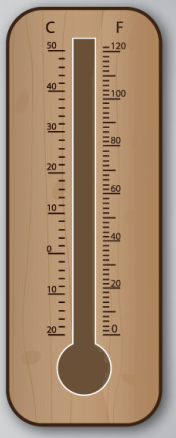

<!DOCTYPE html>
<html>
<head>
	<meta charset="utf-8">
	<title>默认属性</title>
	<script type="text/javascript" src="js/react.min.js" ></script>
	<script type="text/javascript" src="js/JSXTransformer.js" ></script>
	<script type="text/javascript" src="js/jquery-1.11.0.js" ></script>
	<!--组件样式-->
	<style>
		.ez-thermometer{
			position:relative;
		}
		.ez-thermometer .bubble{
			position:absolute;
			width:40px;
			height:40px;
			border-radius:50%;
		}
		.ez-thermometer .bar{
			position:absolute;
			width:10px;
			left:80px;
			transition:top 0.5s;
		}
	</style>
</head>
<body>
	<div id="content"></div>
	<script type = "text/jsx">
		//组件定义
		var EzThermometerComp = React.createClass({
			//声明默认属性值
			getDefaultProps:function(){
				return {
					value:20,		//温度值
					color : "red"   //液柱颜色
				}
			},
			//声明初始状态
			getInitialState:function(){
				return {
					mounted:false
				}
			},
			//首次渲染后改变状态
			componentDidMount:function(){
				this.setState({mounted:true});
			},
			render:function(){
				//液体球样式
				var bubbleStyle = {
					background : this.props.color,
					left:65,
					top:350
				};
				
				//零度时液柱top值
				var top = 253.57;
				
				//根据属性值计算液柱top值
				if(this.state.mounted){
					top = (50-335)*this.props.value/(50+20)+253.57;
					//确保之前设置的样式生效
					window.getComputedStyle(React.findDOMNode(this.refs.bar)).top;
				}
				//液柱样式
				var barStyle = {
					background : this.props.color,
					top: top,
					bottom:80
				};
				return 	<div className="ez-thermometer">
							
							<div className="bubble" style={bubbleStyle}/>
							<div className="bar" style={barStyle} ref="bar"/>
						</div>;
			}
		});
		//渲染
		React.render(
			<EzThermometerComp value="37"/>,
			document.querySelector("#content"));
	</script>
</body>
</html>
<!--
	对于一个组件来讲，通常应该有一些默认的属性值，这样即使调用者没有 显示的指定某个属性值，依然可以通过this.props获得该值。这简化了属性值 缺失引起的错误检查。

在React中定义组件时，使用getDefaultProps()方法声明默认属性：

var EzDemoComp = React.createClass({
    //设置默认属性值
    getDefaultProps:function(){
        return {
            value : 0
        }
    },
    render: function(){
        //使用this.props.value访问属性，如果用户没有设置，则该值为默认值
        return <div classname="ez-demo">{this.props.value}</div>;        
    }
});
//创建React元素时没有指定属性值
React.render(<ezdemocomp></ezdemocomp>,
    document.querySelector("#content"));
-->